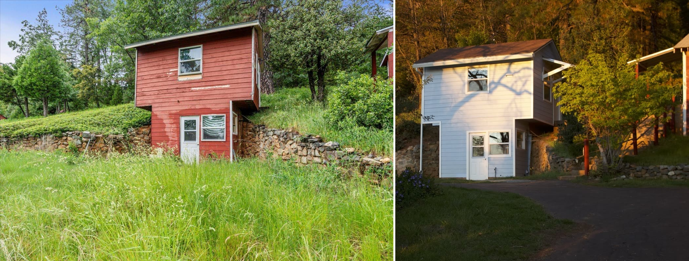

01
Earth architecture
Adobe Tea House
A 12' diameter adobe dome I designed and built after an architecture apprenticeship at CalEarth Institute — now hosting guests as a tea house on Airbnb Experiences.
Read the buildPortfolio · Northern California
Hi, I'm Sonny Morrow, a mechanical engineer working in the medical device industry. I've always enjoyed working with my hands and bringing ideas to life. Whether designing, building, modifying, or restoring, I approach every project with curiosity and an obsession for detail. I'm not afraid to rethink an approach or start over if that's what it takes to get things right. For me, the satisfaction is in the process just as much as the finished product.
See the workA 12' diameter adobe dome I designed and built after an architecture apprenticeship at CalEarth Institute — now hosting guests as a tea house on Airbnb Experiences.
Read the build
A tired 1984 Mercedes-Benz 300D with 230,000 miles, purchased from its original owner. I pulled the engine and transmission, completely refurbished both, and brought the car back to life.
Read the build
My late grandfather's 1964 Oldsmobile, passed down two generations. Its V8 engine was on the verge of catastrophic failure, so I gave it a much needed rebuild. While the engine was out, I also restored the engine bay, bringing it back to life alongside the engine.
Read the build
The adobe dome needed a heating system for the winter, so I studied rocket stove design and engineered and built one that follows the natural contours of the dome. Guests can now enjoy a cozy, wood heated space, warmed by the radiant bench on which they sit.
Read the build
A 1960 Airstream Safari that my wife and I purchased from the original family who bought it new. We are currently restoring it from the ground up. It will serve as a tiny home while we build our forever home, then become a guest bedroom on our property.
Follow the build
A heavy-timber pavilion designed in my favorite CAD program, SolidWorks, and built to permanently shelter the Airstream. The structure is made entirely from locally grown and milled Douglas fir harvested from Banner Mountain in Nevada City, CA.
Read the build
A uniquely shaped 1940s cottage that my business partner and I restored on our rental property. We completely remodeled the interior and exterior, bringing the structure back to life while upgrading all of its mechanical systems. It is now fully restored and serving as a rental home in Grass Valley, CA.
Read the buildHaving to move between my various projects inspired me to design and build a mobile tool organization system housed in a five-foot-long drawer in my 1988 Toyota pickup. I modeled every tool holder in SolidWorks, refining each design down to the smallest detail. Rather than settling for holders that simply worked, I focused on getting every fit, dimension, and detail just right. Each holder was then 3D printed on a Bambu Lab P1S.
Read the build
A custom built camper and mobile workshop based on my 1988 Toyota Pickup. I lined the camper shell with cedar and designed a complete off-grid electrical system featuring a 200Ah battery bank, 400W of solar panels, and a 1,200W inverter. The setup also includes a diesel powered heater and 12V refrigerator, creating a comfortable space for extended trips while providing power for tools, equipment, and everyday needs.
Read the buildSelected projects from my professional work.

A motor-driven gear transmission for EME 150B, the mechanical design course at UC Davis. I modeled the full assembly in SolidWorks and built the hauler, designing every part to be easy to print, assemble and adjust. In the class's Shigley Hauler competition it pulled a weighted load up a ramp at steeper and steeper angles, and our team took first place.
Read the build